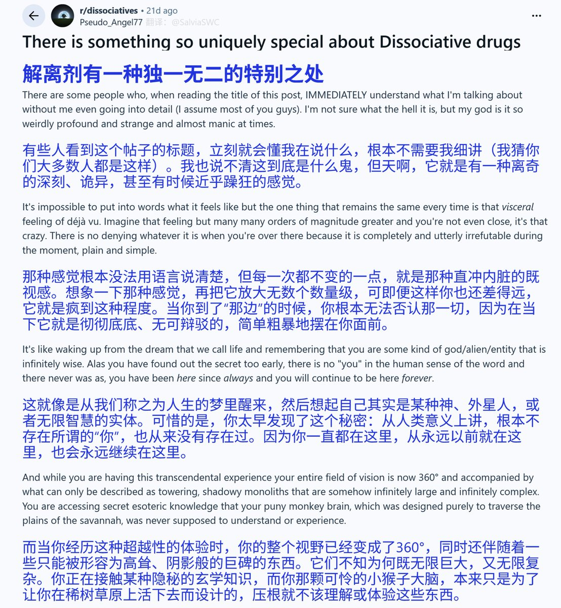
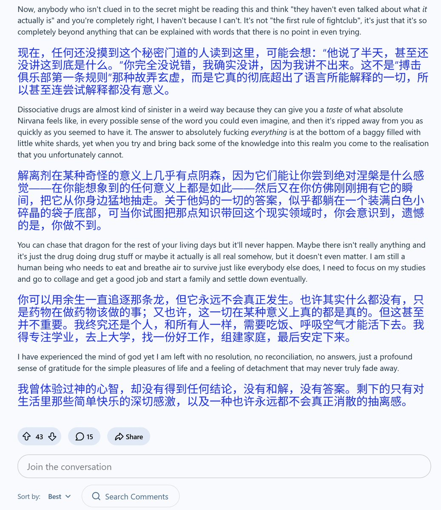
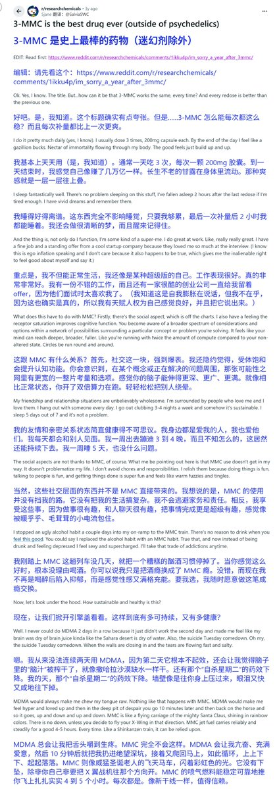
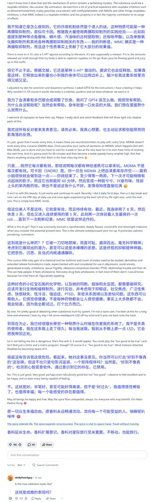

药物报告day14——解离剂的独特超越性体验
贴主描述了自己在解离剂药效中，总是感受到的一种不可名状的神秘、崇高感🤔
“我曾体验过神的心智，却没有得到任何结论，没有和解，没有答案。”
大家有没有过这种感受呢？什么药物的药效会让你有这种感受呢？说说你的想法吧🤓
链接： https://t.co/M65cnhSJmT

贴主描述了自己在解离剂药效中，总是感受到的一种不可名状的神秘、崇高感🤔
“我曾体验过神的心智，却没有得到任何结论，没有和解，没有答案。”
大家有没有过这种感受呢？什么药物的药效会让你有这种感受呢？说说你的想法吧🤓
链接： https://t.co/M65cnhSJmT




药物报告day13——Reddit上对3-MMC的极力赞美
一外国小哥把3-MMC吹得天花乱坠，显然他对3-MMC非常喜爱。然而，文字读起来令人不安，不少评论也怀疑贴主成瘾了，担忧贴主的精神状态。
1年后，贴主果然发贴，称自己未能察觉情况，而现在为时已晚了😢
大家一定要警惕这种情况哦🥺https://t.co/s849j2aOmf https://t.co/93OLpisGew https://t.co/jkP04on8tb
一外国小哥把3-MMC吹得天花乱坠，显然他对3-MMC非常喜爱。然而，文字读起来令人不安，不少评论也怀疑贴主成瘾了，担忧贴主的精神状态。
1年后，贴主果然发贴，称自己未能察觉情况，而现在为时已晚了😢
大家一定要警惕这种情况哦🥺https://t.co/s849j2aOmf https://t.co/93OLpisGew https://t.co/jkP04on8tb